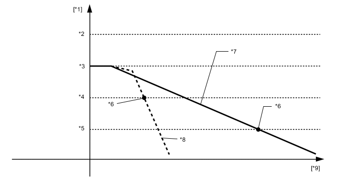
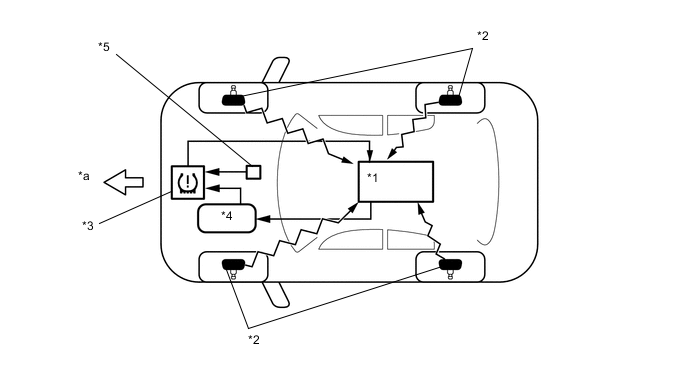

DESCRIPTION OF SYSTEM
The tire pressure warning system warns the driver when the tire pressure has decreased in order to decrease CO2 emissions and enhance safety.
The tire pressure warning system illuminates the tire pressure warning light to warn the driver when any of the following conditions are met:
Due to the operation of the steering pad switch assembly, the tire pressure drops to approximately 80% or less of the tire pressure set during system initialization.
The tire pressure drastically decreases (approximately 20 kPa (0.2 kgf/cm2, 2.9 psi) or more within several minutes) to approximately 80% or less of the tire pressure* when the tires are warmed.
*: If initialization is performed and the vehicle is driven for a certain period of time, the tire pressure set during system initialization is adjusted and set to the tire pressure when the tires are warmed from the driving conditions.
Note
If the tire pressure is decreased approximately 20 kPa (0.2 kgf/cm2, 2.9 psi) or more in order to adjust the tire pressure, even if the adjusted tire pressure is 80% or more than the tire pressure set during system initialization, the tire pressure warning light may illuminate if the tire pressure drops below 80% of the tire pressure set when the tires are warmed. In this case, perform initialization again.

| *1 | Tire Pressure | *2 | Tire Pressure When Tires are Warmed |
| *3 | Tire Pressure During Initialization | *4 | 80% of Tire Pressure When Tires are Warmed |
| *5 | 80% of Tire Pressure During Initialization | *6 | Tire Pressure Warning Light Illuminates |
| *7 | Tire Pressure (Normal) | *8 | Tire Pressure (Drastically Decreasing) |
| *9 | Elapsed Time | - | - |
The tire pressure warning ECU and receiver receives the transmitter ID, temperature and tire pressure information from the tire pressure warning valve and transmitters shown in the following illustration. This information is used to determine when the pressure in one of the tires has dropped.

| *1 | Tire Pressure Warning ECU and Receiver | *2 | Tire Pressure Warning Valve and Transmitter |
| *3 | Combination Meter Assembly - Tire Pressure Warning Light |
*4 | Main Body ECU (Multiplex Network Body ECU) |
| *5 | Steering Pad Switch Assembly | - | - |
| *a | Front | - | - |
DESCRIPTION OF REGISTRATION
When tires and wheels are replaced, always ensure that each transmitter ID is correctly registered.
When one or more of the tire pressure warning valve and transmitters or the tire pressure warning ECU and receiver is replaced, the transmitter IDs for all of the tire pressure warning valve and transmitters must be re-registered. Before registering the transmitter ID of the new tire pressure warning valve and transmitter, check the Data List and record all of the transmitter IDs that are already registered.
TIRE PRESSURE WARNING RESET SWITCH
By operating the steering pad switch assembly, the tire pressure warning ECU and receiver can be set to issue a warning at an inflation pressure that corresponds to the type of tires fitted to the vehicle. Therefore, the warning threshold must be set to the proper value in order to comply with local regulations.
Operate the steering pad switch assembly only after the inflation pressures of all tires (except the compact spare tire) have been adjusted on the vehicle.
DESCRIPTION OF INITIALIZATION
During initialization, the tire pressure warning valve and transmitters measure the inflation pressure of the tires, and register the signals that are transmitted into the tire pressure warning ECU and receiver at a frequency of about once per minute. The initialization process is completed when signals from all tires (except the compact spare tire) have been received.
Perform initialization in the following cases:
Before delivery of a new vehicle.
After replacement of the tire pressure warning ECU and receiver*.
After replacement of a tire pressure warning valve and transmitter*.
When the specified tire pressure changes due to the use of a different size or type of tire.
When the specified tire pressure changes due to a change in the vehicle load, the speed range that the vehicle will be used in, etc.
When a tire rotation is performed and the specified tire pressures are different for the front and rear of the vehicle.
Tech Tips
*: Perform initialization after the transmitter ID registration is completed.
DESCRIPTION OF ID SWITCHING FUNCTION (w/ ID Switching Function)
By designating the ID registration location, it is possible to register transmitter IDs for both the main and 2nd sets of tires.
If IDs are registered for both the main and 2nd tire sets, it is possible to switch between the two sets of tires by operating the steering pad switch assembly.
Note
Be careful as the method to perform ID switching differs from the method to perform initialization.
When reading the status for a registered ID, it is only possible to read the ID information for the selected set of tires.
Tech Tips
In order to read the IDs registered for the main tire set, it is necessary to set the ID selection setting to "Main". Likewise, it is necessary to set the ID selection setting to "2nd" in order to read IDs registered for the 2nd set of tires.
FUNCTION OF MAIN COMPONENTS
| Component | Function |
|---|---|
| Tire Pressure Warning ECU and Receiver |
|
| Tire Pressure Warning Valve and Transmitter |
|
| Steering Pad Switch Assembly |
|
| Combination Meter Assembly | Transmits the vehicle speed signal to the tire pressure warning ECU and receiver. |
| Tire Pressure Warning Light |
|
| Multi-information Switch (Steering Pad Switch Assembly) | Houses the switches to operate the multi-information display. |
| Main Body ECU (Multiplex Network Body ECU) |
|